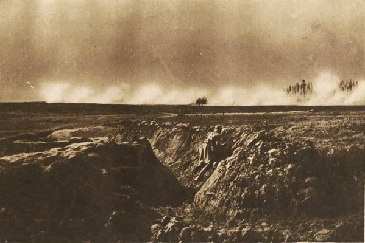

The Last Road Maker (Part 4)
by
James Stoddard
To The Last Road Maker (Part 1)
To The Last Road Maker (Part 3)
He woke with a gasp. He was lying at the bottom of the deep crater where he and his subordinates had taken refuge. Corporal Stephens was sitting by the telephone, and Ridley was asleep.
Hodgson rose and pulled himself to the crater's lip. The east glowed with a pre-dawn light. Through his field-glasses, he saw the Germans had broken through the British lines, and rather than engaging the English to either side, were marching furiously toward Hodgson's position.
There could be no doubt; the house was seeking him, using the unsuspecting Germans, manipulating them in a charge that made no strategic sense.
"Corporal," Hodgson said, "I want you to relay the following to Captain Carver: Turn all guns on section Seventy-four and maintain fire. Tell him it is of the ultimate urgency if we want to halt the enemy advance."
The corporal came up beside Hodgson and stared onto the field. His brow furrowed. "Sir, we'd be aiming far beyond the enemy artillery."
"I am aware of that, and of other information you do not know. Relay the message at once."
"Yes, sir."
Carver will think me mad, Hodgson thought. Even though he can't see the enemy, he will know how far off the sector is. But will he do it? And will shelling have any effect on the immaterial house?
An explosion ripped the earth a hundred yards from where he crouched, and he dropped back into the crater. The enemy guns were seeking him again. More explosions rocked to either side of him. He would not be able to stay here long.
The British artillery came alive. Shells roared over Will's head. He clambered back up to the crater's mouth. Good old Carver! I should have known I could count on him.
He looked back toward where the British artillery lay hidden behind rows of hills, and a cheer escaped his lips. There, riding high in the sky above Carver's guns, hung the White Circle, grown huge, glowing in the morning light. And he knew the English bombardment would not be in vain. Shells were already striking the house; several landed in its upper stories, rending it, sending wood and glass splintering across the battlefield.
"What is it, sir?" Ridley called.
Hodgson dropped to the bottom of the crater, hopeful for the first time in days. But before he could give an answer, a German shell struck at the back edge of their sanctuary.
The blast threw Will off his feet, and everything went black.
For an instant, he was back aboard the Sangier, and he felt the wind upon his face and heard the mast creaking beneath the stars, but the vision faded as quickly as it began, and he was again atop the machine within the Great Rift.
The White Circle spun rapidly above the paver, coruscating golden flames tinged with sparks of green, looking unreal in the twilight. It turned its gaze to Hodgson, its many eyes piercing as knives, and he recoiled beneath their sharpness.
Tendrils extended from the circle, aimed toward the house, a command to go on.
"Why?" Hodgson demanded, feeling a rising anger.
When the circle did not respond, Hodgson said, in a faltering voice. "I want to know. Did I make all this?" He raised his hands to indicate everything around them.
A thought entered his mind, like someone speaking, though the White Circle did not speak. You did not.
"Then why?" Hodgson's voice poured out his anguish. "Why did you give me the visions? Why did I have to go through all of it?"
The circle thrust its tendrils forward again toward the house, yet still Will refused to move. He had been a pawn from the beginning. And they had abandoned Colleen, forced him to abandon her, when she needed him most.
The circle spoke again. Will you trust me?
He looked into its terrible eyes. They were deep wells, unfathomable.
"Why didn't you help her?"
Will you trust me?
Pepper whined and nuzzled his nose against Will's arm, trying to make him move the machine forward. It occurred to him that the dog had also been touched long ago by the circle, and that touch had saved Pepper's life.
"I will trust you," he said at last. "For the sake of England."
He gave the command, and the paver moved forward, pouring the road inch by inch.
But as he neared the house, its door abruptly burst open; and his face grew deathly white, for within lay only darkness and Silence, limitless power and infinite hate far greater in degree than that of the Swine-Things or the pirate phantoms. And not even the White Circle could stand against it.
This was what the old gods intended, to transport the House of Silence from millions of years in the past to the Great Bight and establish their dominance long before humanity was ready to face them. It would taint all life in the Great Rift, bending it to its ends, bringing a swift finish to the human race. Nothing could stop it, and Hodgson hung his head. This was what he had always dreaded: his dreams of Kraighten House, the Ghost Pirates, and the darkness of the Night Land, all given form.
There came a flash of light, and the vision faded.
He was back in Belgium, lying on the ground after the shell's impact. He rose and staggered forward, trying to push the smoke from his eyes. Ridley lay dead, eyes wide to the sky. Another man—it had to be Stephens—lay face-down, unmoving.
He climbed to the top of the crater, feeling surprisingly light and strong. He rubbed his eyes, uncertain what he was seeing. The house stood radiating sheer evil, while the shells fell all around it, and in the morning light its walls were the color of green jade. But behind him to the south, thousands of soldiers came rushing across the battlefield toward the German lines.
Reinforcements! Something inside him said he had to be part of that charge, that belligerent rush against the seen and the unseen foe. His men were beyond his help, and he needed to reach the house, to do whatever he could against it. He seized his rifle and sprinted across the battlefield, filled with a strange, unaccountable exhilaration.
He joined the charge slightly in advance of the other soldiers, practically leading them. They rushed across the broken plain, shouting unintelligibly at first, a cry that changed into a long, wailing shout: "For England!"
Their bayonets fixed, their rifles blazing, they hurled themselves against the Germans. To Hodgson's surprise—for the Huns had never lacked bravery—the enemy threw down their guns and fled on every side.
The soldiers crossed the plain unopposed, and the house stood before them, a gargantuan, gaping edifice. British shells were landing all around them now, striking at the manor.
With the shouting of the men and his own blood pounding through his temples, he did not at first hear the slow silencing of the barrage. But gradually he became aware of his boots striking something harder than bare earth. He was running on a gray surface, and the air was tinged with crimson. He was back in the Rift and the army with him, racing on the road he had fashioned for their passage.
He glanced at the man to his left. It was Ridley. Without slowing his pace, the private gave him a grim salute. Will looked to his right and saw a French soldier whose death had been etched forever into his memory, and behind him a North Hampton lad he had seen perish at Ypres. He gaped back down the road, and there was an endless line, thousands of the dead of Flanders fields. There were German soldiers there too, once foes now friends in the fight, marching against the final enemies of the Earth.
They approached the White Circle and Pepper upon the machine; and Will was surprised at not seeing himself at the helm. Yet there was no time for speculation, for out of that gaping doorway the house reached its invisible tendrils, attempting to pull the army into its endless Silence, to smother the soldiers in its Emptiness. Will gave a choking cry.
At first, the sheer terror of the house quailed all of them, for it pressed upon them with its dark will, and had its power not been diffused over so many, they would have been destroyed. Yet, even as it sought to entrap them, the White Circle moved to a position above the soldiers' heads, a cascading luminance shining from it, bathing each of the Allies in its radiance; and all of them, including Hodgson, became pinpoints of light as bright as the circle itself, every man feeding off its energy, given strength and resolve from it. For a moment, washed in that tremendous glow, Hodgson was possessed by a terrible ecstasy of love and light and of power to perform justice.
We must reach the machine, the circle's command rang through their minds.
Their individual forms blurred into one; the soldiers moved toward the foe, an arrow, a spear aimed at the heart of the house, every man singing a song of Humanity.
The army met the awful hush projecting from the house, and all sound died, tumbling into a stillness that was more than the absence of sound, but Silence Incarnate, the Silence that existed before ever the worlds were made, the ultimate desolation, and within its terrible emptiness, nothing could exist. Will thought he was being torn apart, broken down, atom by atom. He looked at his hands and they were disintegrating; he could see his blood pulsing through his veins, could feel his frame crumbling. The men around him were dissolving, turning to meat and bone. He screamed a silent scream, not a cry of fear, but of defiance. If he would die, he would die for Colleen and Bessie, for England and the whole world. And he and those around him would take the house with them if they could; would show the uncaring universe that men could strike back.
In their desperation, their song became one song, unheard at first, then gradually rising until it burst forth, breaking the Silence:
Take up our quarrel with the foe;
To you from failing hands we throw
The torch; be yours to hold it high.
If ye break faith with us who die...
And beneath the power of that song, the soldiers' forms grew whole again, and they were once more an arrow against their enemy. Along that shaft of light they reached the paving machine and swarmed around it, shaken but unbowed in the very shadow of the great eaves. Gasping and drained, some scarcely able to keep their feet, they managed a rough cheer, and Hodgson cheered with them.
But the White Circle's thoughts echoed like iron across the plain. There is no time! The road must be finished, the Road Maker protected. Will you sacrifice more than blood?
A cry of assent erupted from the soldiers, and the tendrils from the White Circle touched Hodgson's head, as it had touched him so many years before.
Will's vision shifted and Time became tangible. It was disorienting, for he looked through Space and through Time as if it were a continuous line. He glanced behind him, and saw the Road extending back along the canyon floor and backward through Time, so he saw The Quiet City, and the Quiet City being built, and the empty plain before its building. The farther he looked, the more his vision telescoped, allowing him to see clearly. And the Road went on, back to Ypres, so he knew that even as the house was a Doorway for the Forces of Evil, he had become a Portal for the army of Flanders. And beyond that, he saw his journey to Belgium, and his journey through life, and even farther back in Time, sailors fighting phantoms on a ship at sea, and mariners lost in an island of seaweed, and even farther back, to Kraighten House standing beside a great chasm; and beyond that, the manor through all the ages, and the dark gods who possessed it looking on.
He turned the other way, and saw how the Road led to the porch of the house that stood in the Rift. And he knew it must be finished, that Time might follow its original course. And he realized with a shock he was ordained for that moment; that he was Road Maker, and Paver of the Way, and the Seeker of the Path, and that the course of his life had been down but a single road. He realized that the Forces of Good had used the Passage created by the house, following the Road through Time, exploiting that which had been created for evil in order to thwart Evil's intent.
Though he was so weary he could scarcely put one foot before the other, he staggered back up the steps of the machine, and as he did so, the army hurried to place itself between him and the House of Silence, pitting their spirits against its own. A wall of white light, the strength of their combined wills, rose between them and it. And the White Circle spun above the wall, adding its own strength to it, its rotations so rapid they gave a deep roaring.
With Pepper licking his hand, Will cut a wide swath around the house, pouring the road, yard upon yard in the endless twilight, following the vision that showed where it must run.
But the House of Silence would not be so easily vanquished. It extended its will toward Hodgson, trying to reach him with all its dark intellect. And ever the soldiers and the Barrier of Light stood between him and destruction. Yet the house tested the strength of the blockade, reaching through its weakest points and licking the men like a consuming flame, covering them in its Silence, pulling them through the Barrier, bringing them clattering over its porch, across its threshold, and into the darkness of its great open doorway. One by one they went, entering into the Silence which is more than silence, into the dread maw of unquenchable evil. And as they entered, their voices fell silent, dying in the air like poppies before the frost.
Hodgson could do nothing but keep to his task. With every inch of the road he laid, he saw Time quiver and change, the permutations narrowing, strange futures falling and fading into the Never-Have-Been, as the new chronal lines created by the materialization of the house collapsed and disappeared.
He passed into the shadow of the Great Bight, still pouring the road.
As more and more of the soldiers were swept away by the House of Silence, he felt its malignant will pressing through the Barrier of Protection, drawing ever closer to him. He heard it calling, ordering him to stop the machine. He lowered his head and pressed forward, weeping as he went, trying not to hear the dying cries of his comrades. But even as they perished, they sang a valiant song, their voices filling the vast canyon, echoing off the walls and rising up through all the leagues to the dead surface of the world, a final hymn to the glory of all the lost civilizations of the earth:
I am the enemy you killed, my friend.
I knew you in this dark; for so you frowned
Yesterday through me as you jabbed and killed.
I parried; but my hands were loath and cold.
Let us sleep now...
At last, when the power of the house beat upon Will's brow until he thought he would be utterly destroyed, he saw, just ahead, a final future of a world of endless darkness lit by strange fires, and of a Great Pyramid standing in the midst of the plain. And he reached the Road's end, to where the Road must end, at the top of the Great Slope that would someday lead down into darkness. The machine emitted a final burst of material, and, devitalized at last, fell quiescent. Hodgson could go no farther.
There came a stirring in the air, and looking up he saw, for the briefest moment, the old gods glaring down, and felt the malice of their frustrated wills. Then the air cleared; the terrible pressure from the house ceased; and the gods were gone. Though they would someday return to reclaim it, their terrible presence had deserted the house for a time, leaving it no longer the House of Silence, but only the shell of Kraighten Manor.
He stepped down from the machine. Three-quarters of the army of the dead were gone, devastated by the assault. Those who survived saluted as one man, and began winking out, leaving the mortal plain for the last time, their final duty done.
Within minutes, all had departed save a few score. These drew together, facing Hodgson and the White Circle. And from their midst stepped Colleen.
Tears welled in Hodgson's eyes. He took her hands. "I never thought to see you again. I couldn't get back to you. I wanted to, but—"
"You would have died before your time if you had. It was a terrible ordeal; but the White Circle protected my soul from destruction, and I was not left alone."
"But. . . Bessie. I promised—"
"I'm sorry, Will." She kept her eyes fixed steadily on his own. "Some promises cannot be kept."
"Then what was the point of my confession?"
"In the Great Pyramid, before anyone enters the Night Land, he undergoes the Rite of Preparation, to prepare his body and soul for combat. Your time with her, your voyage aboard the Sangier...these were necessary."
Will found he could not speak.
The White Circle's thoughts rumbled through the air. You fought well. By foiling the assault, we have gained millions of years for the human race. But there is always more to be done.
The circle emitted a great light that bathed the entire company. Beneath its glow, the soldiers, including Hodgson and Colleen, grew tall and thin and regal as kings, glowing white with a holy light.
The light died, save where it haloed Hodgson, and the White Circle said, You will lead these, the best of the brave, to protect the Future. And you will have an old name that is new, and will hereafter be called "Hope," for you will bring hope in the coming darkness.
And Hodgson truly knew, for the first time, that though there was great evil in the world, there were Forces of Good to oppose them, to insure that humanity would live out its time to the end. Though the Forces of Evil would ultimately prevail, leaving this universe a dark husk, they would not entirely have their way. And of that which lay Beyond this universe, might the Forces of Good not at last win through?
Colleen gently squeezed his hand. "We've work to do, my love. The work of Eternity."
Captain Carver stood stone-faced, listening to Corporal Stephens.
"I had just moved back to the telephone, sir. There was a blast close-by, and the lieutenant and Ridley were thrown back. There was nothing to be done for either of them."
Carver nodded his head. "Did he say anything at the end?"
"He was mumbling something, sir, about the dark land and the silent house, I think it was. It didn't make any sense. He was a brave man. One of the bravest I've seen."
"He was certainly that. If he hadn't had us retrain the guns, the Germans would have broken through. He may have saved the army and the war. We won't meet his like again."
"No, sir."
The corporal left and Carver stared across the battlefield. It was November 17, 1918, and in the fields of Belgium, William Hope Hodgson lay dead, cut down by a German shell.
But millions of years in the future, when the sun is no more, white warriors walk the Great Road and the desert places of the Night Land, defenders against the Forces of Evil. And among them are two who always travel together, and legends say they are sometimes seen holding hands. And there is ever with them a creature in the form of a great hound, who never leaves their side.
© 2011 by James Stoddard.
The image is in the public domain and the photographer is unknown.